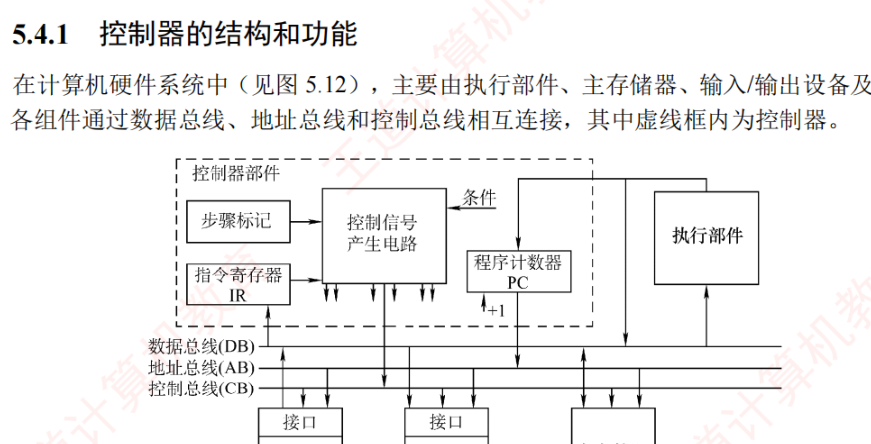
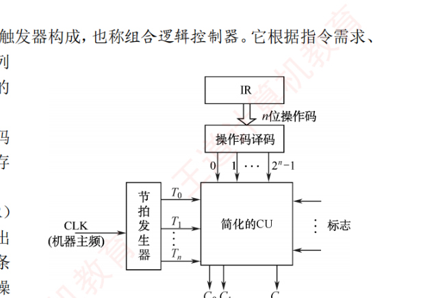
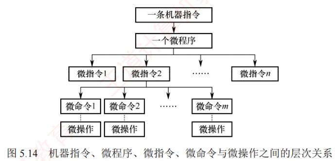
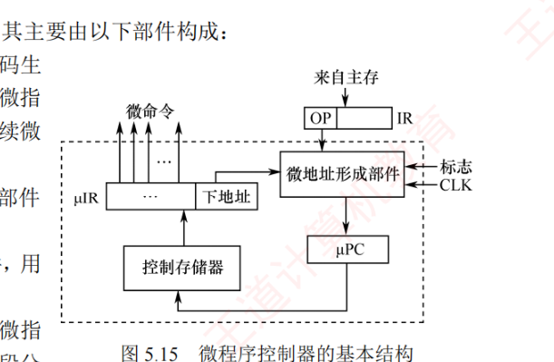
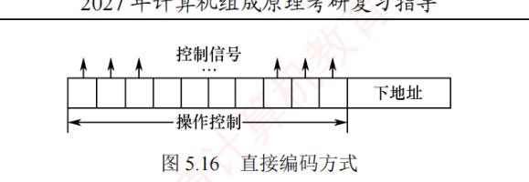
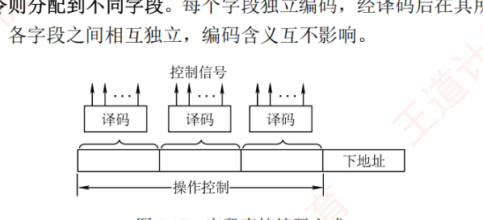
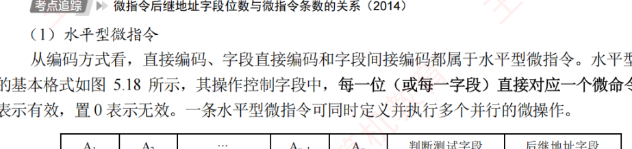
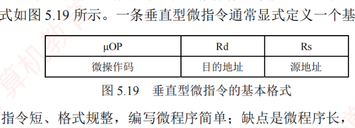

5.4 控制器的功能和工作原理
数据通路是「干活的手」，控制器就是「发令的大脑」：它按节拍发出一串串微操作控制信号，指挥取指、译码、运算、访存按序完成。控制信号的产生方式有两条技术路线——硬布线控制器（组合逻辑直接产生，快但难改）与微程序控制器（把控制信号编成微指令存进控存，慢但规整灵活）。本节是本章概念最密集的一节：微命令、微指令、微程序、控存、水平型/垂直型、直接/字段编码，全部是选择题的常客；控存容量与微指令格式设计则常出综合题。
5.4.1控制器的结构和功能
在计算机硬件系统中（见图 5.12），主要由执行部件、主存储器、输入/输出设备和控制器组成。各组件通过数据总线、地址总线和控制总线相互连接，其中虚线框内为控制器。

各部件的主要连接关系如下：
- 执行部件经由数据总线与主存及 I/O 设备交换数据；
- 输入输出设备通过接口电路接入系统总线；
- 主存及 I/O 设备根据地址总线上的地址信号判断是否被选中，并依据控制总线上的读/写等控制信号，通过数据总线完成数据传输；
- 控制器通过地址总线将指令地址（PC 的值）访问主存，并将获取的指令通过数据总线送入指令寄存器（IR），由控制器解析并控制执行。
控制器是计算机的指挥中心，其主要职责包括：
- 取出指令：将指令从主存取至下一条指令的位置（更新 PC）；
- 对指令的操作码进行解析，产生对应的时序信号和控制信号，以协调各部件工作；
- 管理 CPU、主存和 I/O 设备间的数据流向与时序，确保指令正确执行。
依据微操作控制信号的产生方式不同，控制器可分为硬布线控制器和微程序控制器，尽管两者都需配合 PC 和 IR，但在指令执行步骤的表现形式以及控制信号的产生机制上有本质区别。
5.4.2硬布线控制器
硬布线控制器由复杂的组合逻辑电路和触发器构成，也称组合逻辑控制器。它根据指令需求、当前状态和内部状态，按时间顺序产生一系列微操作控制信号，以完成指令的操作。关键的微操作序列决定控制单元（CU）行为的决策；CU 作为处理器的「指挥中心」，依据操作码生成相应的控制信号，协调寄存器、ALU、存储器等硬件部件的工作。
为简化 CU 的设计，通常将指令寄存器（IR）中的 \(n\) 位操作码译码后产生 \(2^n\) 个输出信号，每种操作码译码后，会唯一地激活一条输出导线，用于触发对应控制逻辑。若操作译码器和触发器从 CU 中分离，则可得到如图 5.13 所示的简化控制单元结构图。

CU 的输入主要有三类信号：
- 操作译码器输出的指令信息，与节拍信号共同用于生成相应的微操作控制信号；
- 时钟脉冲，其频率即机器主频，用于划分节拍，确保控制信号按时发出；
- 执行单元反馈的状态标志，使 CU 能够根据当前状态动态调整控制逻辑。
在图 5.13 中，节拍发生器在每个时钟周期产生节拍信号，使不同的微操作控制信号 \(C_i\) 能够按时发出。由于某些指令（如条件转移）的执行不仅取决于操作码，还受状态标志影响，CU 必须综合操作码译码结果、节拍信号和状态标志，生成相应的控制信号，并发送至 CPU 内部数据通路或外部控制总线。
硬布线控制器通过组合逻辑电路实现，其性能主要受电路延迟影响。设计时，先用逻辑表达式描述各控制信号，经化简后实现为硬件电路。该方法响应速度快，但灵活性差：修改或新增指令需要重新设计电路，复杂且耗时。同时，随着指令系统功能增强，微操作控制信号的数量急剧增加，导致电路规模庞大、调试困难。为克服这些缺点，微程序设计方法应运而生。
【例】节拍与微操作序列安排。在单总线结构中，若要求取指周期内实现 (PC)+1→PC 且由 ALU 完成加 1 运算（ALU 只能对它的两个输入端完成加法运算），关键是要考虑总线冲突问题。PC 的值可作为 ALU 的一个源操作数，在 ALU 做加 1 运算得到 (PC)+1 后，结果先送至 ALU 输出端指定的暂存寄存器 R2，然后再送至 PC。取指周期的微操作命令及节拍安排如下：
| 节拍 | 微操作命令 | 说明 |
|---|---|---|
| T0 | (PC) → MAR, 1→R | PC 通过总线送 MAR |
| T1 | M(MAR) → MDR, (PC)+1 → R2 | 读主存同时由 ALU 完成加 1，结果暂存 R2 |
| T2 | (MDR) → IR, OP(IR) → 微操作命令形成部件 | MDR 通过总线送 IR |
| T3 | (R2) → PC | R2 通过总线送 PC |
而一条操作数隐含在 ACC 中的立即寻址加法指令，其执行周期的微操作命令及节拍安排如下：
| 节拍 | 微操作命令 | 说明 |
|---|---|---|
| T0 | Ad(IR) → R1 | 立即数 → R1 |
| T1 | (R1) + (ACC) → R2 | ACC 通过总线送 ALU |
| T2 | (R2) → ACC | 结果 → ACC |
5.4.3微程序控制器
微程序控制器采用存储逻辑实现，其核心思想是：将控制器所需的微操作控制信号组织为微指令，并将执行每条指令所需的微指令序列（微程序）预先存入一个专用的高速存储器中。运行时，控制器通过依次读取微指令，生成相应的微操作控制信号，从而完成指令的执行。
1. 微程序控制的基本概念
微程序设计涉及以下基本术语：
（1）微命令与微操作
在微程序控制的计算机中，控制部件向执行部件发出的最基本控制信号称为微命令，它是构成控制序列的最小单位。例如，使某个寄存器写入信号、打开数据通路中的控制门等。执行部件接收到微命令后所执行的具体动作称为微操作，二者一一对应。
微命令可分为两类：相容性微命令是指可同时有效、协同完成某一功能的微命令；互斥性微命令是指在同一时刻不允许同时有效的微命令。
（2）微指令与微周期
微指令是若干微命令的组合，通常包含两个字段：
- 微操作控制字段（又称微操作码字段）：用于生成当前步骤所需的微操作控制信号；
- 顺序控制字段（又称下址字段）：用于确定下一条微指令的地址。
微周期是执行一条微指令所需的基本时间单位，通常为一个时钟周期。
综上，机器指令、微程序、微指令、微命令与微操作之间的层次关系如图 5.14 所示。

（3）主存储器与控制存储器
主存储器用于存放程序和数据，位于 CPU 外部，通常用 RAM 实现。控制存储器（CM）用于存放微程序，位于 CPU 内部，通常用 ROM 实现。控制存储器中每个存储单元的地址称为微地址。
（4）程序与微程序
微程序和程序是两个不同的概念：程序是指令的集合，由软件开发者编写，用于完成特定功能，最终存放在主存储器中；微程序是指令的集合（微指令的有序集合），由计算机机体结构设计者编写，用于解释和执行机器指令，固化于控制存储器中。微程序本质上是机器指令的硬件解释逻辑。对程序员而言，微程序的存在完全透明，无须了解其内部结构。
为确保微程序控制器正常工作，需要区分以下关键寄存器：
- 存储器地址寄存器（MAR）：存放主存读/写地址；
- 微地址寄存器（μPC 或 CMAR）：存放待执行微指令在控制存储器中的微地址；
- 指令寄存器（IR）：存放从主存读出的当前机器指令；
- 微指令寄存器（μIR 或 CMDR）：存放从控制存储器读出的当前微指令。
2. 微程序控制器的基本组成和过程
（1）微程序控制器的基本组成
图 5.15 展示了微程序控制器的基本结构，其主要由以下部件构成：

- 微地址形成部件：根据机器指令的操作码、转移标志及外部条件（如中断信号等），生成后续微指令的微地址，确保微指令有序执行；
- 微地址寄存器：接收微地址形成部件提供的微地址，作为 CM 的读地址，又称为微指令计数器 μPC；
- 控制存储器：微程序控制器的核心部件，用于存放所有机器指令对应的微程序；
- 微指令寄存器：暂存从 CM 中读出的微指令，并将其操作控制字段和下地址字段分别送至执行单元和微地址形成部件。
（2）微程序控制器的工作过程
微程序控制器的工作过程是指计算机在微程序控制下执行机器指令的流程，具体如下：
- 执行取指公共微操作：系统启动或每条指令执行完毕后，将取指微程序的入口地址（通常为 CM 的 0 号单元）送入 μPC。随后，从 CM 中读取首条微指令并送入 μIR，完成取指操作后，从主存中取出的机器指令被存入指令寄存器（IR）中；
- 生成当前指令的微程序入口地址：根据 IR 中机器指令的操作码，通过微地址形成部件产生对应微程序的起始微地址，并送入 μPC；
- 顺序执行微程序：从 CM 逐条读取微指令，送入 μIR 并执行，直至该微程序执行完毕；
- 返回循环：当当前机器指令的微程序执行结束后，控制器自动转移回取指微程序的入口（步骤①），重新开始处理下一条机器指令。
整个流程不断循环，直至整个程序执行完毕。
（3）微程序和机器指令
一般而言，一条机器指令对应一个微程序。由于所有指令的取指操作相同，可将取指操作的微指令统一编写为一个公共的取指微程序，专门负责从主存读取指令并送入 IR。此外，还可以为同时处理中断等公共操作分别编写对应的微程序。因此，控制存储器中存储的微程序总数 = 机器指令数 + 公共微程序数（如取指、中断等）。
3. 微指令的编码方式
微指令的编码方式又称微指令控制方式，是指对微指令操作控制字段进行组织和表示的方法。其目标是在保证执行速度的前提下，尽量缩短微指令字长，从而节省控制存储器空间。
（1）直接编码（直接控制）方式
如图 5.16 所示，直接编码方式无须译码，微指令的操作控制字段中，每一位直接对应一个微命令。设计时，若某位为 1，表示其对应的微命令有效；若为 0，则表示无效。每个微命令独立控制数据通路中的一个微操作。

该方式的优点是结构简单、直观，微命令可并行发出，执行速度快；缺点是微指令字长过长，若有 \(n\) 个微命令，则操作控制字段需要 \(n\) 位，导致控制存储器容量急剧膨胀。
（2）字段直接编码方式
如图 5.17 所示，字段直接编码将操作控制字段划分为若干互斥段：互斥性微命令被归入同一字段，相容性微命令则分配到不同字段。每个字段独立编码，经译码后在其所属的互斥微命令集中激活一个微命令。各字段之间相互独立，编码含义互不影响。

微指令字段划分需遵循以下原则：
- 互斥性微命令应分布在同一字段，而相容性微命令应分布在不同字段；
- 每个字段的位数不宜过多，以避免译码电路过于复杂或引入较大延迟；
- 每个字段通常还需预留一个编码表示「本字段无操作」。例如，当字段长度为 3 位时，最多只能表示 7 个具体的微命令，通常用 000 表示无操作。
该方式显著降低了微指令字长，但需要译码，执行速度略低于直接编码。
（3）字段间接编码方式
字段间接编码方式进一步压缩微指令长度。其基本思想是：某个微指令字段的实际含义，由另一个字段的编码共同决定。例如，字段 A 的编码 001 本身无固定意义，只有结合字段 B 的值（如 B = 0 表示 ALU 操作，B = 1 表示存储器操作），才能确定 001 究竟代表加法还是写内存。
这种方式可进一步缩短微指令字长，减少控制存储器的容量需求。然而，由于译码线路更为复杂，时间开销较大，因此仅适用于特定场合。
现举例说明。假设有两类互斥操作：ALU 操作（加、减、与、或，共 4 种）和存储器操作（读、写、取指、间址，共 4 种）。在这 8 个微命令中，ALU 操作彼此互斥，存储器操作彼此互斥，但 ALU 与存储器操作相容（可同时发生，如「加法 + 写内存」）。直接编码需 8 位，每位对应一个微命令；字段直接编码将其分为两个字段，每个字段 3 位（含无操作状态），共需 6 位；而字段间接编码仅用一个 3 位的操作字段，再加一个 1 位的类型字段指示其类别（例如，操作字段 = 001、类型字段 = 0 表示 ALU 加法，操作字段 = 001、类型字段 = 1 表示主存读），总共仅需 4 位。
4. 微指令的地址形成方式
为保证微指令流的连续执行，每条微指令必须指明其下一条微指令的地址。该地址通常在当前微指令从控制存储器中取出后立即生成，可通过以下两种基本方式形成：
- 增量方式（计数器方式）：下条微地址由微程序计数器（μPC）自动加 1 生成，适用于微程序中顺序执行的顺序地址段；
- 断定方式（下址字段方式）：在当前微指令中显式指定下条微地址，微指令中包含下址字段，可直接给出下条微地址。
在实际运行中，下条微地址的形成取决于以下三种典型情形：
- 微程序入口地址的形成：机器指令写入指令寄存器（IR）后，其操作码经微地址形成部件生成对应微程序的首条微指令地址，并送入 μPC；
- 顺序执行：在无转移的微程序段中，通常采用增量方式，由 μPC + 1 自动生成下条微地址；若采用断定方式，则需当前微指令的顺序控制字段中显式写入微地址；
- 条件分支：当需要根据标志标志或外部条件选择不同执行路径时，微地址形成部件结合当前微指令的下址字段指定的转移目标微地址与条件信息来确定下条微地址。
5. 微指令的格式
微指令格式与其编码方式密切相关，通常分为水平型微指令和垂直型微指令两类。
（1）水平型微指令
从编码方式看，直接编码、字段直接编码和字段间接编码都属于水平型微指令。水平型微指令的基本格式如图 5.18 所示，其操作控制字段中，每一位（或每一段）直接对应一个微命令，置 1 表示有效，置 0 表示无效。一条水平型微指令可同时定义并行执行的多个微操作。

其优点是并行能力强、执行效率高、微程序短；缺点是微指令字长较长，编写微程序困难。
（2）垂直型微指令
采用类似机器指令的结构，在微指令中设置微操作码字段，通过译码产生控制信号。垂直型微指令的基本格式如图 5.19 所示，一条垂直型微指令通常只定义一个基本微操作。

其优点是微指令字短、格式规整、编写微程序简单；缺点是微程序字长长、执行速度慢、效率低。
水平型微指令与垂直型微指令的比较：
- 水平型微指令并行能力强、灵活性强、效率高；垂直型在这些方面则表现较差；
- 单条水平型微指令可完成多个工作；垂直型需多条微指令完成同等任务，耗时更长；
- 水平型微指令字长冗长、编码复杂；垂直型微指令字长较短、编写更轻松；
- 水平型微指令编写微程序的难度大；而垂直型类似于机器指令，更易于理解和编写。
6. 硬布线控制器和微程序控制器的特点
（1）硬布线控制器的特点
硬布线控制器的优点在于其运行速度主要取决于电路延迟，因此执行速度快。然而，由于控制部件被实现为专门生成固定时序控制信号的组合逻辑电路，设计时须使用最少硬件资源并实现最高速度为目标，一旦设计完成，通常难以通过软件手段扩展或修改功能。
（2）微程序控制器的特点
与硬布线控制器相比，微程序控制器具有结构规整、灵活性强和易于维护的优势，其设计基于存储程序原理，便于对微程序进行修改与扩展。不过，由于每条微指令均需从控制存储器中读取，导致指令执行的微周期增加，从而影响整体运行速度。
| 对比项 | 微程序控制器 | 硬布线控制器 |
|---|---|---|
| 工作原理 | 微操作控制信号以微指令的形式存放在控制存储器中，执行指令时逐条读出并译码 | 微操作控制信号由组合逻辑电路根据当前的指令、状态和时序即时产生 |
| 执行速度 | 慢 | 快 |
| 规整性 | 较规整 | 烦琐、不规整 |
| 应用场合 | CISC CPU | RISC CPU |
| 易于扩展性 | 易于修改扩展 | 扩展修改困难 |
计算例题：控存容量与微指令格式设计
【例 1】控制存储器容量估算。某机有 80 条指令，平均每条指令由 4 条微指令组成（包含取指微指令），其中有一条取指微指令为所有指令的公共微指令，已知指令长度为 32 位，请估算控制存储器 CM 的容量。
解：总的微指令条数 = (4−1)×80 + 1 = 241 条，每条微指令占一个控制存储器单元。控制存储器 CM 的容量为 2 的 \(n\) 次幂，而 241 刚好小于 256（\(2^8\)），所以 CM 的容量 = \(256 \times 32\) 位 = 1KB。
【例 2】水平型直接编码的微指令格式设计。某微程序控制器中，采用水平型直接控制（编码）方式的微指令格式，后续微地址由微指令的后继地址字段给出。已知机器共有 28 个微命令、6 个互斥的可判定外部条件，控制存储器的容量为 \(512 \times 40\) 位，试设计其微指令的格式，并说明理由。
解：水平型微指令由操作控制字段、判断测试字段和后继地址字段三部分构成。因为指令采用直接控制（编码）方式，所以其操作控制字段的位数等于微命令数，为 28 位。又因为后继微指令地址由微指令给出，所以其位数可根据控制存储器的容量（\(512 \times 40\) 位）确定为 9 位（\(512 = 2^9\)）。当微程序出现分支时，后续微指令地址的形成取决于状态条件——6 个互斥的可判定外部条件，因此状态位（判断测试字段）应编码成 3 位。非分支时的后续微指令地址由微指令的后继地址字段直接给出。即：
| 操作控制字段（28 位） | 判断测试字段（3 位） | 后继地址字段（9 位） |
合计 28 + 3 + 9 = 40 位，与控存单元字长一致。
【例 3】字段直接编码的微指令格式与控存容量。某机共有 52 个微操作控制信号（微命令），构成 5 个互斥类的微命令组，组内分别包含 5、8、2、15、22 个微命令。已知可判定的外部条件有两个，微指令字长 28 位。1）按水平型微指令格式设计微指令，要求微指令的后继地址字段能直接给出后继微指令的微地址；2）指出控制存储器的容量。
解：
1）根据 5 个互斥类的微命令，各组分别包含 5、8、2、15、22 个微命令。考虑到每组必须预留一种「不发出任何微命令」的状态，则 5 个控制字段分别需留出 6、9、3、16、23 种状态，对应 3、4、2、4、5 位（共 18 位）——复核：\(6 \le 2^3\)、\(9 \le 2^4\)、\(3 \le 2^2\)、\(16 \le 2^4\)、\(23 \le 2^5\)，均成立。两个可判定外部条件，判断测试字段 2 位。根据微指令字长为 28 位，后继地址字段 = 28 − 18 − 2 = 8 位，则其微指令格式如下：
| 5个微命令 （3位） | 8个微命令 （4位） | 2个微命令 （2位） | 15个微命令 （4位） | 22个微命令 （5位） | 判断测试 （2位） | 后继地址 （8位） |
2）根据后继地址字段为 8 位、微指令字长为 28 位，得出控制存储器的容量为 \(2^8 \times 28\) 位（= 256×28 位 = 7168 位）。